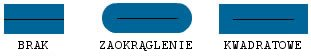
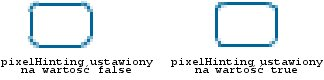

| Pakiet | flash.display |
| Klasa | public final class GraphicsStroke |
| Dziedziczenie | GraphicsStroke |
| Implementuje | IGraphicsStroke, IGraphicsData |
| Wersja języka: | ActionScript 3.0 |
| Wersje środowiska wykonawczego: | Flash Player 10, AIR 1.5 |
Należy użyć obiektu GraphicsStroke z metodą Graphics.drawGraphicsData(). Narysowanie tego obiektu jest równoważne wywołaniu jednej z metod klasy Graphics, które ustawiają styl linii, np. metoda Graphics.lineStyle(), metoda Graphics.lineBitmapStyle() lub metoda Graphics.lineGradientStyle().
Powiązane elementy interfejsu API
flash.display.Graphics.lineBitmapStyle()
flash.display.Graphics.lineGradientStyle()
flash.display.Graphics.drawGraphicsData()
 Ukryj dziedziczone właściwości publiczne
Ukryj dziedziczone właściwości publiczne Pokaż dziedziczone właściwości publiczne
Pokaż dziedziczone właściwości publiczne| Właściwość | Zdefiniowane przez | ||
|---|---|---|---|
| caps : String
Określa typ zakończenia na końcu linii. | GraphicsStroke | ||
 | constructor : Object
Odwołanie do obiektu klasy lub funkcji konstruktora, dotyczące danej instancji obiektu. | Object | |
| fill : IGraphicsFill
Określa instancję zawierającą dane dotyczące wypełniania obrysu. | GraphicsStroke | ||
| joints : String
Określa wygląd połączeń używany dla kątów. | GraphicsStroke | ||
| miterLimit : Number
Wskazuje ograniczenie, na którym ścięcie jest obcinane. | GraphicsStroke | ||
| pixelHinting : Boolean
Określa, czy obrysy są przyciągane do pełnych pikseli. | GraphicsStroke | ||
| scaleMode : String
Określa skalowanie grubości obrysu. | GraphicsStroke | ||
| thickness : Number
Wskazuje grubość linii w punktach; wartości prawidłowe należą do zakresu od 0 do 255. | GraphicsStroke | ||
| Metoda | Zdefiniowane przez | ||
|---|---|---|---|
GraphicsStroke(thickness:Number = NaN, pixelHinting:Boolean = false, scaleMode:String = "normal", caps:String = "none", joints:String = "round", miterLimit:Number = 3.0, fill:IGraphicsFill = null)
Tworzy nowy obiekt GraphicsStroke. | GraphicsStroke | ||
|
Wskazuje, czy dla obiektu zdefiniowano określoną właściwość. | Object | |
|
Wskazuje, czy instancja klasy Object należy do łańcucha prototypów obiektu określonego jako parametr. | Object | |
|
Wskazuje, czy określona właściwość istnieje i jest przeliczalna. | Object | |
|
Ustawia dostępność właściwości dynamicznej używanej w pętlach. | Object | |
|
Zwraca ciąg reprezentujący obiekt — sformatowany zgodnie z konwencjami właściwymi dla ustawień regionalnych. | Object | |
|
Zwraca ciąg reprezentujący określony obiekt. | Object | |
|
Zwraca pierwotną wartość dla określonego obiektu. | Object | |
caps | właściwość |
caps:String| Wersja języka: | ActionScript 3.0 |
| Wersje środowiska wykonawczego: | Flash Player 10, AIR 1.5 |
Określa typ zakończenia na końcu linii. Wartości prawidłowe to: CapsStyle.NONE,CapsStyle.ROUND oraz CapsStyle.SQUARE. Jeżeli wartość nie jest wskazana, aplikacja Flash stosuje zakończenia zaokrąglone.
Na przykład poniższe ilustracje ukazują różne ustawienia właściwości capsStyle. Na ilustracji przedstawiono wygląd niebieskiej linii o grubości 30 (z zastosowaną właściwością capsStyle) dla poszczególnych ustawień oraz nałożoną czarną linię grubości 1 (względem której właściwość capsStyle nie jest stosowana):

Implementacja
public function get caps():String public function set caps(value:String):voidPowiązane elementy interfejsu API
fill | właściwość |
public var fill:IGraphicsFill| Wersja języka: | ActionScript 3.0 |
| Wersje środowiska wykonawczego: | Flash Player 10, AIR 1.5 |
Określa instancję zawierającą dane dotyczące wypełniania obrysu. Wystąpienie klasy IGraphicsFill może reprezentować serię poleceń wypełniania.
Powiązane elementy interfejsu API
joints | właściwość |
joints:String| Wersja języka: | ActionScript 3.0 |
| Wersje środowiska wykonawczego: | Flash Player 10, AIR 1.5 |
Określa wygląd połączeń używany dla kątów. Wartości prawidłowe to: JointStyle.BEVEL, JointStyle.MITER i JointStyle.ROUND. Jeżeli wartość nie jest wskazana, aplikacja Flash stosuje połączenia zaokrąglone.
Na przykład poniższe ilustracje ukazują różne ustawienia właściwości joints. Na ilustracji przedstawiono wygląd łamanej niebieskiej linii o grubości 30 (z zastosowaną właściwością jointStyle) dla poszczególnych ustawień oraz nałożoną czarną linię grubości 1(względem której właściwość jointStyle nie jest stosowana):

Uwaga: Dla właściwości jointsustawionej na wartość JointStyle.MITER, możliwe jest zastosowanie parametru miterLimit w celu ograniczenia długości ścięcia.
Implementacja
public function get joints():String public function set joints(value:String):voidPowiązane elementy interfejsu API
miterLimit | właściwość |
public var miterLimit:Number| Wersja języka: | ActionScript 3.0 |
| Wersje środowiska wykonawczego: | Flash Player 10, AIR 1.5 |
Wskazuje ograniczenie, na którym ścięcie jest obcinane. Wartości prawidłowe znajdują się w granicach od 1 do 255 (wartości poza tymi granicami są zaokrąglane do 1 lub 255). Wartość ta jest stosowana tylko w przypadku ustawienia właściwości jointStyle na wartość "miter". Wartość miterLimit przedstawia długość na którą ścięcie może wystawać poza punkt, w którym linie spotykają się i tworzą połączenie. Wartość wyraża współczynnik thickness linii. Przykładowo z współczynnikiem miterLimit wartości 2.5 oraz właściwością thickness o wartości 10 pikseli, ścięcie jest ucinane na 25 pikselach.
Można na przykład przeanalizować poniższe linie pod kątem, każdy narysowany przy właściwości thickness o wartości 20, ale przy właściwościmiterLimit ustawionej na 1, 2 i 4. Nałożone zostały czarne linie odwołania, ukazujące punkty spotkania połączeń:

Należy zauważyć, iż podana wartość właściwości miterLimit ma określony kąt maksymalny, przy którym ścięcie jest obcinane. Poniższa tabela przedstawia listę niektórych przykładów:
wartość właściwości miterLimit: | Obcięciu ulegają kąty mniejsze niż: |
|---|---|
| 1.414 | 90 stopni |
| 2 | 60 stopni |
| 4 | 30 stopni |
| 8 | 15 stopni |
pixelHinting | właściwość |
public var pixelHinting:Boolean| Wersja języka: | ActionScript 3.0 |
| Wersje środowiska wykonawczego: | Flash Player 10, AIR 1.5 |
Określa, czy obrysy są przyciągane do pełnych pikseli. Ma to wpływ na położenie punktów kontrolnych krzywej oraz sam rozmiar linii obrysu. Po ustawieniu wartości true dla pixelHinting program Flash Player automatycznie zmienia szerokości linii na szerokość wyrażoną jako wielokrotność pikseli. Przy właściwości pixelHinting ustawionej na wartość false mogą pojawić się przerwy na krzywych lub liniach prostych. Na przykład: poniższe ilustracje przedstawiają sposób, w jaki program Flash Player renderuje dwa zaokrąglone prostokąty, które są identyczne, ale parametr pixelHinting używany w metodzie lineStyle() jest ustawiony inaczej (obrazy zostały wyskalowane o 200%, w celu uwypuklenia różnic):

scaleMode | właściwość |
scaleMode:String| Wersja języka: | ActionScript 3.0 |
| Wersje środowiska wykonawczego: | Flash Player 10, AIR 1.5 |
Określa skalowanie grubości obrysu. Poprawne wartości to:
-
LineScaleMode.NORMAL—Zawsze będzie skalowana grubość linii gdy obiekt jest skalowany (domyślnie). -
LineScaleMode.NONE—Nigdy nie będzie skalowana grubość linii. -
LineScaleMode.VERTICAL—Nie będzie skalowana grubość linii, gdy obiekt jest skalowany wyłącznie pionowo. Można na przykład przeanalizować poniższe okręgi narysowane linią o grubości jednego piksela i w każdym przypadku z parametremscaleModeustawionym na wartośćLineScaleMode.VERTICAL. Okrąg po lewej stronie jest skalowany wyłącznie pionowo, zaś okrąg po prawej stronie jest skalowany zarówno pionowo jak i poziomo:
-
LineScaleMode.HORIZONTAL—Nie będzie skalowana grubość linii, gdy obiekt jest skalowany wyłącznie poziomo. Przykładowo biorąc pod uwagę poniższe okręgi narysowane linią o grubości jednego piksela i w każdym przypadku z parametremscaleModeustawionym na wartośćLineScaleMode.HORIZONTAL. Okrąg po lewej stronie jest skalowany wyłącznie poziomo, zaś okrąg po prawej stronie jest skalowany zarówno pionowo jak i poziomo:
Implementacja
public function get scaleMode():String public function set scaleMode(value:String):voidPowiązane elementy interfejsu API
thickness | właściwość |
public var thickness:Number| Wersja języka: | ActionScript 3.0 |
| Wersje środowiska wykonawczego: | Flash Player 10, AIR 1.5 |
Wskazuje grubość linii w punktach; wartości prawidłowe należą do zakresu od 0 do 255. W przypadku braku określenia liczby, lub gdy parametr nie jest zdefiniowany, wówczas linia nie jest rysowana. Jeżeli wartość mniejsza niż 0 jest przekazywana, wówczas wartość domyślna wynosi 0. Wartość 0 wskazuje grubość cienkiej linii; grubość maksymalna wynosi 255. Jeżeli wartość większa niż 255 jest przekazywana, wówczas wartość domyślna wynosi 255.
GraphicsStroke | () | Konstruktor |
public function GraphicsStroke(thickness:Number = NaN, pixelHinting:Boolean = false, scaleMode:String = "normal", caps:String = "none", joints:String = "round", miterLimit:Number = 3.0, fill:IGraphicsFill = null)| Wersja języka: | ActionScript 3.0 |
| Wersje środowiska wykonawczego: | Flash Player 10, AIR 1.5 |
Tworzy nowy obiekt GraphicsStroke.
Parametrythickness:Number (default = NaN) | |||||||||||
pixelHinting:Boolean (default = false)true dla pixelHinting program Flash Player automatycznie zmienia szerokości linii na szerokość wyrażoną jako wielokrotność pikseli. Przy właściwości pixelHinting ustawionej na wartość false mogą pojawić się przerwy na krzywych lub liniach prostych. Na przykład: poniższe ilustracje przedstawiają sposób, w jaki program Flash Player renderuje dwa zaokrąglone prostokąty, które są identyczne, ale parametr pixelHinting używany w metodzie lineStyle() jest ustawiony inaczej (obrazy zostały wyskalowane o 200%, w celu uwypuklenia różnic):
Jeżeli wartość nie jest podana, wówczas przy rysowaniu linii nie jest stosowane przyciąganie do pikseli. | |||||||||||
scaleMode:String (default = "normal")
| |||||||||||
caps:String (default = "none")CapsStyle.NONE,CapsStyle.ROUND oraz CapsStyle.SQUARE. Jeżeli wartość nie jest wskazana, aplikacja Flash stosuje zakończenia zaokrąglone.
Na przykład poniższe ilustracje ukazują różne ustawienia właściwości | |||||||||||
joints:String (default = "round")JointStyle.BEVEL, JointStyle.MITER i JointStyle.ROUND. Jeżeli wartość nie jest wskazana, aplikacja Flash stosuje połączenia zaokrąglone.
Na przykład poniższe ilustracje ukazują różne ustawienia właściwości
Uwaga: Dla właściwości | |||||||||||
miterLimit:Number (default = 3.0)jointStyle na wartość "miter". Wartość miterLimit przedstawia długość na którą ścięcie może wystawać poza punkt, w którym linie spotykają się i tworzą połączenie. Wartość wyraża współczynnik thickness linii. Przykładowo z współczynnikiem miterLimit wartości 2.5 oraz właściwością thickness o wartości 10 pikseli, ścięcie jest ucinane na 25 pikselach.
Można na przykład przeanalizować poniższe linie pod kątem, każdy narysowany przy właściwości
Należy zauważyć, iż podana wartość właściwości
| |||||||||||
fill:IGraphicsFill (default = null) |
Powiązane elementy interfejsu API
Tue Jun 12 2018, 12:06 PM Z